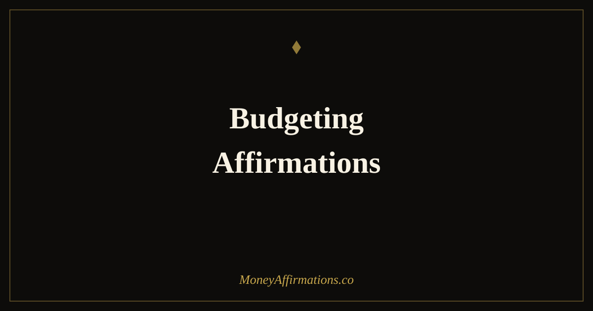

50 Budgeting Affirmations for Financial Control and Money Confidence

Most budgeting advice treats failure as a character problem. You broke the budget because you lacked discipline, self-control, or commitment. The solution offered is always more of the same: more restrictions, more tracking, more willpower. But the research on behaviour change tells a different story — willpower depletes, restriction breeds rebellion, and shame about money is one of the strongest predictors of continued financial avoidance.
These 50 budgeting affirmations are organized as five graduated tiers of budgeting mastery — because where you are matters as much as where you're going. A first-time budgeter needs completely different support than someone rebuilding after going over budget, or someone who has been tracking consistently for six months and is ready to move from control to confidence. Find your tier, use it honestly, and move forward without judgment.
What are budgeting affirmations?
Budgeting affirmations are mindset statements that directly address the psychological barriers to consistent financial planning: shame about past spending, resistance to tracking, fear of seeing the real numbers, and the all-or-nothing thinking that makes one overspent category feel like total failure.
Unlike affirmations focused on attracting wealth or abundance, budgeting affirmations work at the level of daily financial behaviour. They reinforce the identity of someone who shows up for their finances — imperfectly, but consistently. Research on habit formation and identity change shows that the most durable behaviour shifts come from changing how we see ourselves, not just what we tell ourselves to do. "I am someone who manages money with intention" is a more powerful driver of behaviour than "I will track every purchase."
50 budgeting affirmations for financial control
Find the tier that matches where you are today. Budgeting mastery is not linear — some days call for tier one affirmations even after years of practice. Use them without judgment.
Just starting — your first budget (1–10)
- Starting imperfectly is far better than waiting until I feel ready.
- I am allowed to begin without knowing all the answers.
- Creating my first budget is an act of courage and I honour it as such.
- I do not need to track everything perfectly to make progress — consistency matters more than accuracy right now.
- My relationship with money is changing, and this budget is the beginning of that change.
- I approach my finances with curiosity, not judgment, as I learn what my money is actually doing.
- It is okay that I haven't budgeted before — what matters is that I'm starting now.
- I am capable of understanding my own finances and I grow more capable every day I practice.
- A messy first budget is still a first budget, and a first budget is everything.
- I give myself full permission to learn as I go — financial skill is built, not born.
Building the habit — showing up consistently (11–20)
- I show up for my budget every week because I show up for myself.
- The habit of tracking my money is becoming natural and easy.
- Each time I review my finances, I reinforce my identity as someone who is in control.
- Consistency, not perfection, is what transforms my financial life.
- I make time for my budget because my financial future deserves that attention.
- Every small act of financial awareness compounds over time into lasting change.
- Reviewing my numbers, even when they are uncomfortable, is one of the bravest things I do.
- I am building a financial habit that will serve me for the rest of my life.
- Showing up to my budget when I don't feel like it is exactly when it matters most.
- I am not maintaining a budget — I am practicing financial self-care, and it is working.
When you go over budget — the compassion reset (21–30)
- Going over in one category does not make me a failure — it gives me information.
- I learn more from overspending than from a perfect month, and I use that learning.
- I treat myself with the same compassion I would offer a friend who made the same mistake.
- This overage is a data point, not a character flaw.
- I reset without drama. I adjust the plan and I continue.
- Imperfect months are part of every real financial journey — I stay in the game.
- The only budget that truly fails is the one I abandon, and I am not abandoning mine.
- I release shame about this spending and redirect my energy toward the next right action.
- I am a person who makes mistakes and keeps going — and that is exactly what financial growth looks like.
- Every overage I handle with honesty and grace brings me closer to the financial confidence I am building.
Sticking to your plan — discipline as self-respect (31–40)
- Staying within my budget is not a restriction — it is freedom in the making.
- Every time I choose my plan over impulse, I prove to myself that I can be trusted with money.
- My financial discipline is an expression of respect for my future self.
- I spend in alignment with my values, and that alignment feels genuinely good.
- Pausing before unplanned purchases is a skill I have developed and I use it with confidence.
- I am building a new normal in which conscious spending is easier than impulsive spending.
- Following my budget is one of the most powerful things I do for my long-term wellbeing.
- I have decided what my money is for, and I honour that decision with my daily choices.
- Saying no to some things means I am saying yes to the life I am intentionally building.
- Financial self-respect and financial self-discipline are the same thing, and I practice both.
Mastering financial control — the abundant budgeter (41–50)
- I budget from a place of abundance, not scarcity — I am allocating, not restricting.
- My budget is a tool for freedom and it is working exactly as it should.
- I have created a financial system that reflects who I am and where I am going.
- Financial control does not feel limiting to me — it feels like the ultimate form of choice.
- I manage my money with the confidence of someone who has shown up for it again and again.
- Every category in my budget was chosen by me and serves my actual life — I review it with pride.
- I am proof that budgeting and abundance are not opposites — they are partners.
- Money flows through my life in a way that is organized, intentional, and deeply satisfying.
- I have built a financial life that aligns with my values, and I continue to refine it with skill.
- I budget not because I have to, but because I know exactly what I am building — and it is worth it.
How to use these affirmations
The most effective way to use these is to identify your current tier honestly — not aspirationally. If you are starting your first budget, begin with tier one even if tier five sounds more appealing. Affirmations work because they meet you where you actually are, not where you wish you were. A statement you cannot believe even a little delivers no psychological benefit.
Use the relevant tier during your regular budget review session. If you don't have a review session yet, start one: five minutes, same day each week, same time. Read through your chosen tier before you open your numbers. This primes your mindset before the data lands, which reduces the chance that a single overspent category derails the whole session.
The compassion reset tier (21–30) is worth memorizing at least one affirmation from, regardless of your current stage. Budgeting breaks down are near-universal. Having a practiced response ready — "This overage is a data point, not a character flaw" — prevents the shame spiral that turns a single overage into budget abandonment. Building a strong saving mindset is a companion practice that reinforces your budget at the motivational level.
As you grow, move between tiers freely. Advanced budgeters sometimes need beginner affirmations during major life transitions — new job, new baby, unexpected expense. There is no shame in going back to tier one. The skill is knowing which tier you need, not staying in the highest one.
The psychology of budgeting: why willpower alone fails and identity makes it stick
The conventional view of budgeting failure is a willpower problem. You didn't try hard enough, want it enough, or care enough. But decades of research on self-regulation tell a fundamentally different story.
Roy Baumeister's work on ego depletion demonstrated that self-control draws on a limited psychological resource that depletes with use throughout the day. Every decision — what to eat, what to wear, what to say in a meeting — consumes a small amount of that resource. By the time you encounter a spending temptation in the evening, after a full day of decisions, your capacity for restraint is genuinely reduced. This is not weakness; it is neuroscience. Budgets built on the assumption of constant willpower are structurally designed to fail.
Decision fatigue compounds this. The more financial decisions your budget requires you to make in real time, the more likely it is to break down. This is why budgets with automatic transfers succeed where manual saving fails — they remove the decision from the depleted-willpower zone entirely.
The alternative that research consistently supports is values-based budgeting: designing a spending plan around what genuinely matters to you rather than what you think you should spend money on. When your budget reflects your actual values, sticking to it feels less like denial and more like self-expression. The friction between "I want this" and "I shouldn't spend on this" reduces significantly when you have already decided, in advance, that your money is going toward what you care about most.
Most powerfully, psychologist James Clear and identity researcher William Miller both point to identity-based habits as the most durable form of behaviour change. The shift from "I am trying to budget" to "I am someone who manages money with intention" changes the relationship between action and self-concept. When budgeting becomes part of who you are rather than something you do, it becomes far more resistant to lapses — because a lapse would contradict your identity, not just your plan. The tier five affirmations in this list are specifically designed to anchor that identity.
Tips to make them work faster
- Stack them with your existing routine: Pair budget affirmations with something you already do reliably — morning coffee, a weekly calendar review, Sunday evening wind-down. Habit stacking (anchoring a new behaviour to an existing one) dramatically increases follow-through compared to scheduling a standalone new habit.
- Write your own from the templates: Take the structure of affirmations that resonate and rewrite them in your own specific words. "I am building a financial system" becomes more powerful when it references your actual system — "I review my YNAB categories every Sunday and I trust the process." Specificity increases believability.
- Use the compassion reset immediately: The moment you notice you've gone over budget, before you close the app, before you move on — say one affirmation from tier three out loud. This trains the immediate response from shame to learning, and it is the single most impactful intervention for long-term budget adherence.
- Progress tier gradually: Move from one tier to the next only after you have genuinely internalized the previous tier's statements — meaning you can say them with some conviction rather than hope. Premature advancement creates a gap between stated identity and actual behaviour, which can produce more shame rather than less.
- Review your tier monthly: At the start of each month, check which tier matches your current relationship with your budget. Honest self-assessment is not regression — it is the foundation of a practice that actually serves you rather than performing for an audience of none.
Frequently asked questions
Why do I keep failing at budgeting even when I really want to stick to it?
The most common reason is that budgeting is treated as a willpower problem when it is actually a design problem. Research by Baumeister on ego depletion shows that self-control is a limited resource that depletes with use throughout the day. Budgets that rely on constant restraint — saying no to spending impulses repeatedly — will eventually fail because the psychological energy for restraint runs out. The most effective budgets are designed so that the right choice is the easy choice: automatic savings transfers, spending categories that align with your actual values, and a system that requires fewer decisions, not more discipline.
What is the best time of day to review my budget with affirmations?
Morning, before decision fatigue sets in, is generally most effective for the review itself. Cognitive resources are highest at the start of the day for most people, making it easier to look at numbers clearly and make adjustments. Pair the review with affirmations from tier two or three — the habit-building and discipline groups — to reinforce the behaviour as a values-based practice rather than a chore. If a full morning review isn't realistic, even a two-minute evening check with one affirmation from the completion tier can create a useful closing ritual that reduces overnight financial anxiety.
Can affirmations replace an actual budgeting system?
No — and they are not designed to. Affirmations address the psychological layer of budgeting: the resistance, the shame, the motivation to keep going, the identity shift from "someone who can't budget" to "someone who manages money well." But they do not replace the practical system: the spreadsheet, the app, the envelope method, or whichever structure tracks your income and spending. Think of affirmations as the mindset layer that makes the practical system stick. Without the system, affirmations lack grounding. Without the mindset layer, the system often gets abandoned after the first imperfect week.
Budgeting is one of the most concrete expressions of wealth-building, and the confidence it creates extends well beyond the spreadsheet. For affirmations that support your broader financial growth — saving, investing, and building lasting wealth — explore the full wealth affirmations collection.